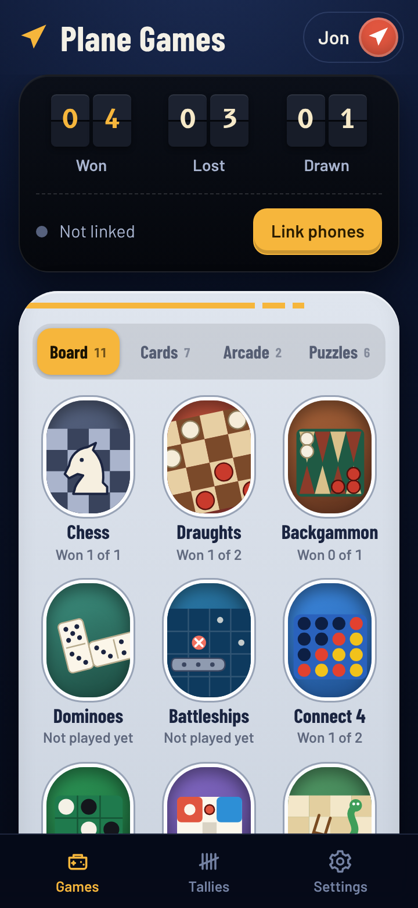
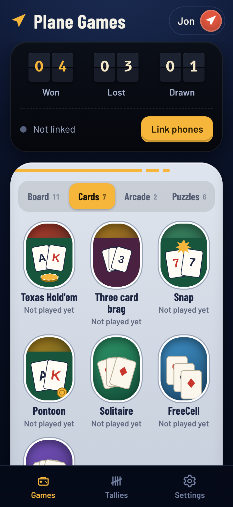
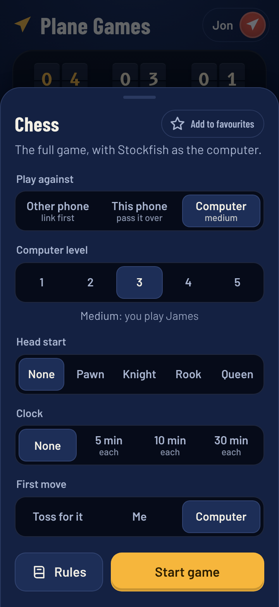
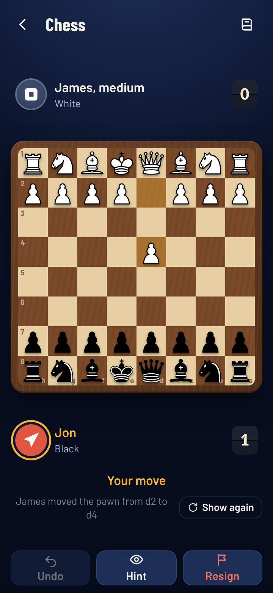
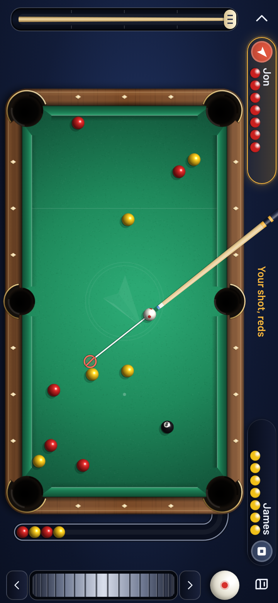
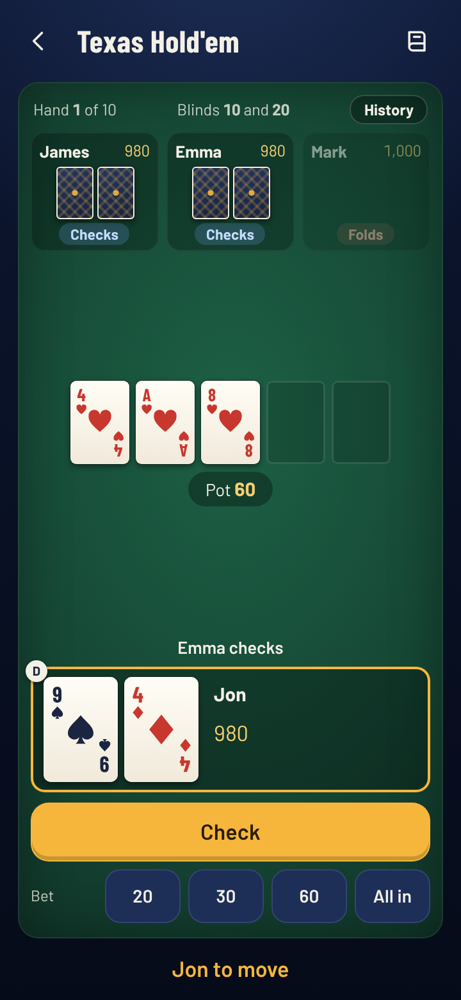
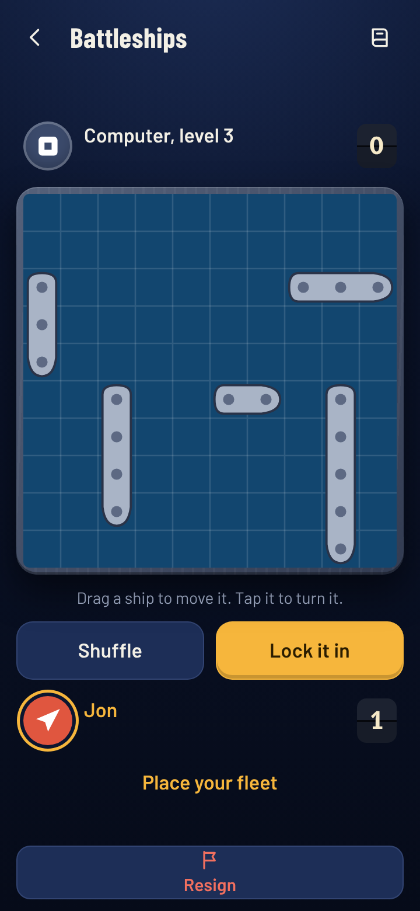
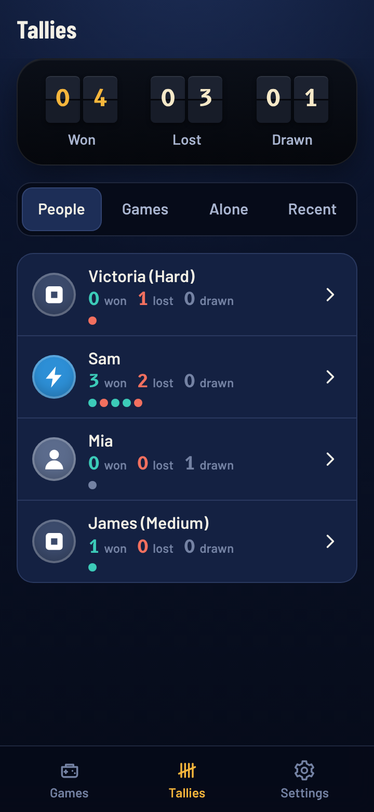

Twenty-six games for the seats next to yours
Plane Games links up to four phones straight to each other by Bluetooth and Wi-Fi, with no internet, no router and no mobile data. Made for flights, trains and anywhere the signal gives up.
Play chess, pool, poker, ludo and more against each other, pass one phone round, or take on the computer.
Download for AndroidHow to install
- Version 1.2
- Android 8 or later
- 4.9 MB
Free, with nothing to unlock. No adverts, no account with the developer, no tracking. Compare or read the release notes.
Chrome may say the file might be harmful. It shows this for app files that do not come from Google Play. Choose Download anyway.

- No internet neededPhones link straight to each other.
- No advertsNone in the app and none on this site.
- No purchasesEvery game is in, free.
- No accountNothing to sign up for.
A look inside
These are the real screens, drawn from the app's own code. Swipe or scroll sideways to see them all.







How it works
Every game is inside the app. Phones find each other with Android's own nearby-device link, so nothing goes through the internet.
Link the phones
Both open Link phones. One hosts, the others join by tapping the host's name or scanning its code.
Pick a game
Choose from twenty-six. Computer players fill any empty seats in the games for more than two.
Play
Each phone sends only its moves. Dice and shuffles are made by all the phones together, so nobody can cheat.
Everything is in, and all of it is free
Nothing below is held back for a paid tier, because there is no paid tier.
The games
- Twenty-six of them
- Board: chess, draughts, backgammon, dominoes, battleships, Connect 4, reversi, noughts and crosses, ludo, snakes and ladders, dots and boxes. Cards: Texas Hold'em, three card brag, snap, pontoon, solitaire, FreeCell and spider. Arcade: 9-ball and 8-ball pool. Puzzles: sudoku, minesweeper, 2048, hangman, code breaker and 120 chess puzzles.
- Up to four phones
- Ludo, snakes and ladders, dots and boxes, dominoes, Hold'em and brag on up to four phones, two to six seats.
- One phone too
- Pass and play on one phone, or play the computer at five levels, each with its own named players.
Fair play
- Private cards
- Your hand and your tiles show only on your phone.
- No cheating
- Dice and shuffles are made by every phone together, and fleets and words are checked at the end.
- Head starts and clocks
- Give a weaker player a head start, or play against the clock.
Keeping score
- Tallies
- Won, lost and drawn, for each person you play.
- Replays
- Watch the last forty games back, move by move.
- Continue later
- A part-played game waits for you, on every phone.
Made for travel
- Flight mode
- Switch flight mode on, then Bluetooth back on, and you can still play.
- Send the app
- Pass the app itself to a friend's phone, phone to phone.
- Backup
- Save a file with your tallies and bring it back on a new phone.
Nothing leaves the phones
No servers
There are no accounts and no servers. Phones talk only to each other.
No ads, no tracking
There is no advertising, analytics or tracking, in the app or on this site.
Location only for the link
Older Android versions ask for Location to find nearby phones. It is not used for anything else.
Installing and updating
Plane Games is not on Google Play, so your phone asks a couple of extra questions the first time.
Download the app file
Tap Download on your phone. The file is called PlaneGames.apk and is about 4.9 MB. If Chrome says the file might be harmful, choose Download anyway.
Allow the install
Open the file. The first time, Android asks you to allow your browser to install apps. Allow it, go back and tap Install. If Google Play Protect steps in, choose More details, then Install anyway.
Updating later
Plane Games tells you when a newer version is out. Install the new file over the old one and everything you have saved is kept.
Version 1.2, released 22 November 2026. See the release notes, or check your download.
Questions
Does it really work with no internet?
Yes. Every game is inside the app. Two phones link straight to each other by Bluetooth and Wi-Fi, without a router, a hotspot or mobile data. The only time the app uses the internet is to look for a newer version, and it carries on quietly if there is none.
Does it work in flight mode?
Yes. Switch flight mode on, then switch Bluetooth back on, and Wi-Fi as well if your phone lets you. The link screen shows what is switched off and has a button for each. Games against the computer, games on one phone and the one-player games need nothing switched on at all. Always follow the cabin crew's instructions about phones.
Do both of us need the app?
To play on two phones, yes. If the other person does not have it, open Invite in the app and choose Send the app: it goes from your phone to theirs by Quick Share or Bluetooth, with no internet. You can also play on one phone, passing it between you.
Can an iPhone join in?
No. Plane Games is for Android only, and two phones can link only if both run it. An iPhone owner can still play on your phone in pass-and-play.
How do two phones link?
Both open Link phones. One taps Host and the other taps Join, then taps the host's name or scans the code on the host's screen. Both phones show the same short number; check it matches and tap Link. Phones that have linked before can skip the number check.
Why does it ask for Nearby devices, or for Location?
Android will not let any app find a phone nearby without it. On Android 13 and later the permission is called Nearby devices. On Android 12 and older, Android also asks for Location and needs Location switched on while the phones find each other. Plane Games never reads where you are.
How far apart can the phones be?
Keep them within a few seats of each other. Walls, seat backs and people in between shorten the range.
Is the pool like the one I know?
It is 9-ball and 8-ball played by touch: drag to aim, turn the wheel for fine aim, set spin on the cue ball, pull the power bar back and let go. A potted ball drops into the pocket and runs down a rail beside the table. 8-ball can be played by UK pub rules, with two shots after a foul, or with ball in hand. The aiming line can be long, short or off.
Is Plane Games on Google Play?
No. It is downloaded from this site as an app file. That is why Chrome and Play Protect ask you to confirm when you install it.
How do I move my tallies to a new phone?
In Settings choose Save a backup file and send that file to the new phone. There, choose Bring back a backup and pick the file.
How do I update?
When there is internet the app looks for a newer version about twice a day and says so on the home screen. Download the new file from this site and open it; it installs over the old one and keeps your tallies. Settings also has Check for a newer version, and a button that copies the link where every version is published.
Is it really free?
Yes. There are no adverts, no purchases and no account.
Twenty-six games, no signal needed
Free, with no adverts and nothing to unlock. Made by the developer of several other free Android apps: see them all.